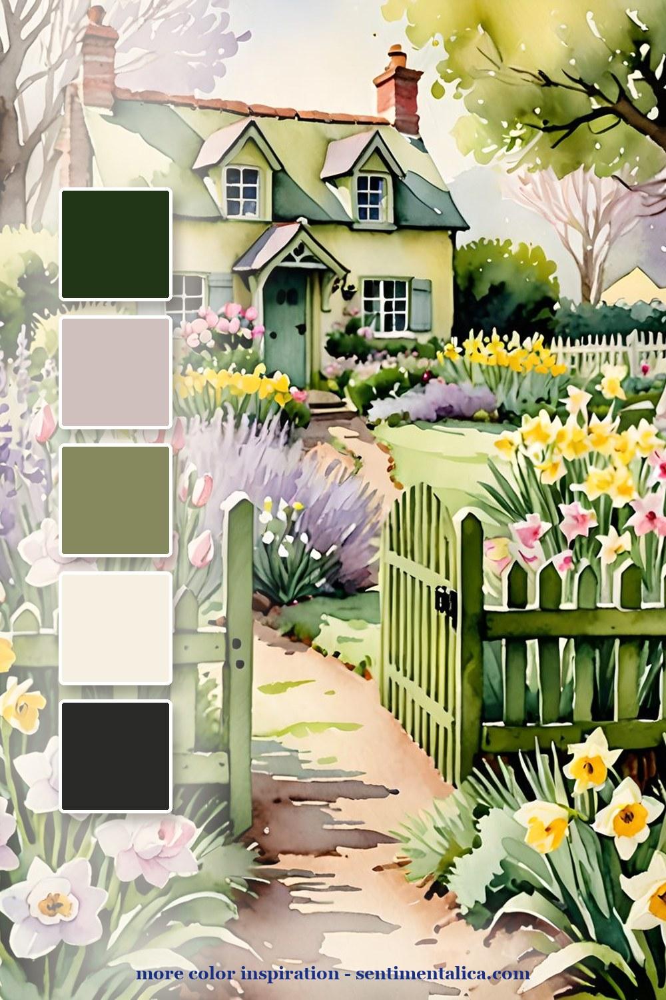
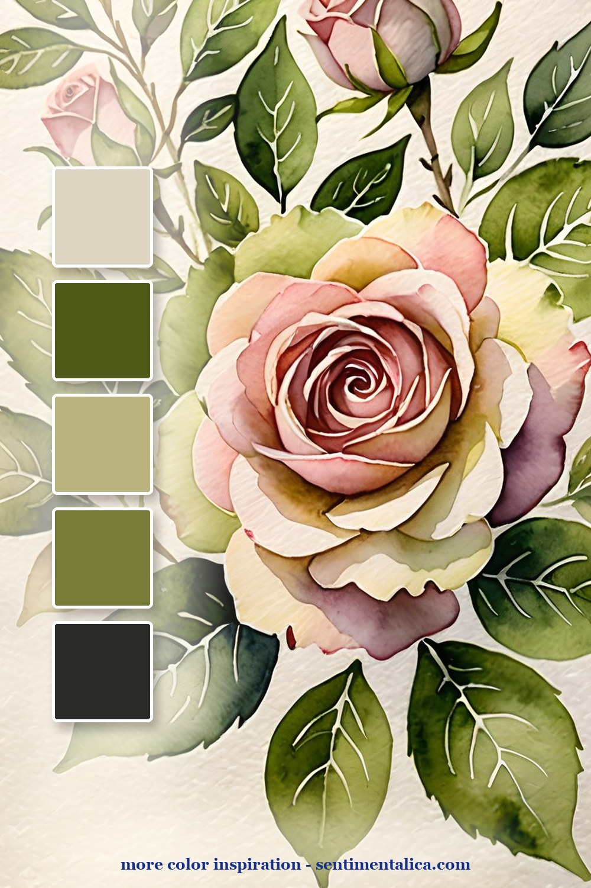
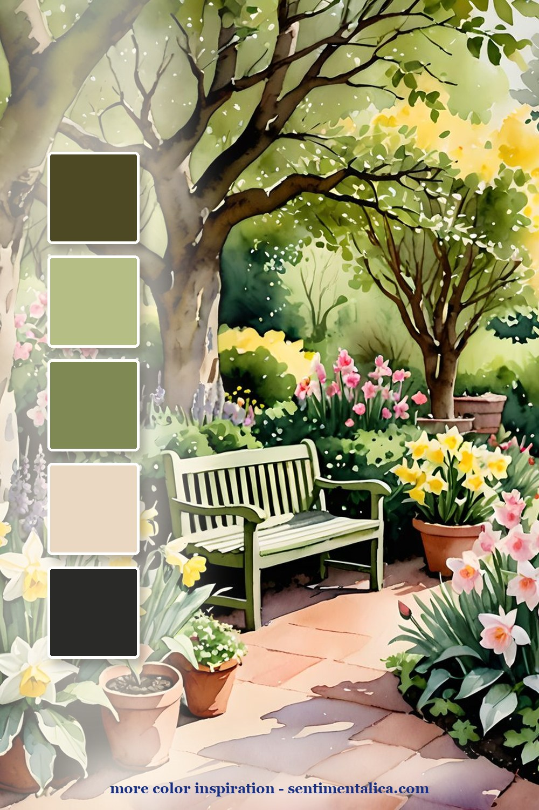
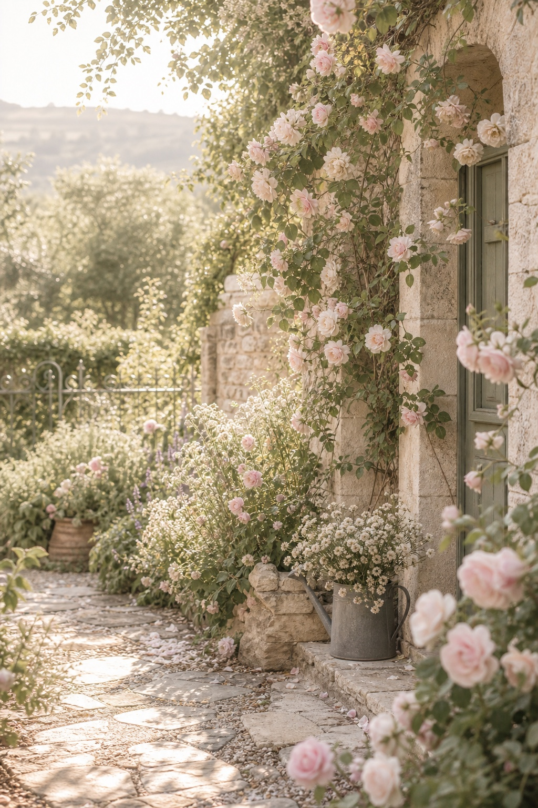
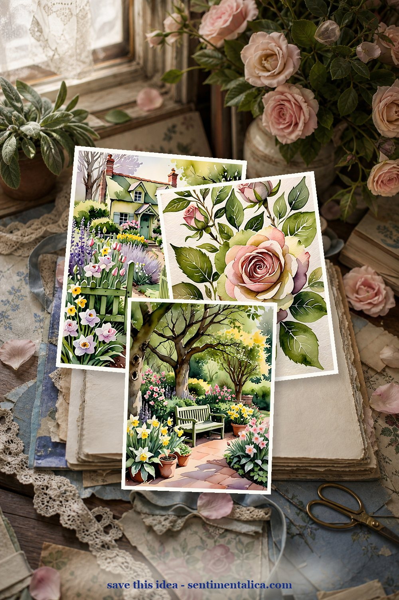
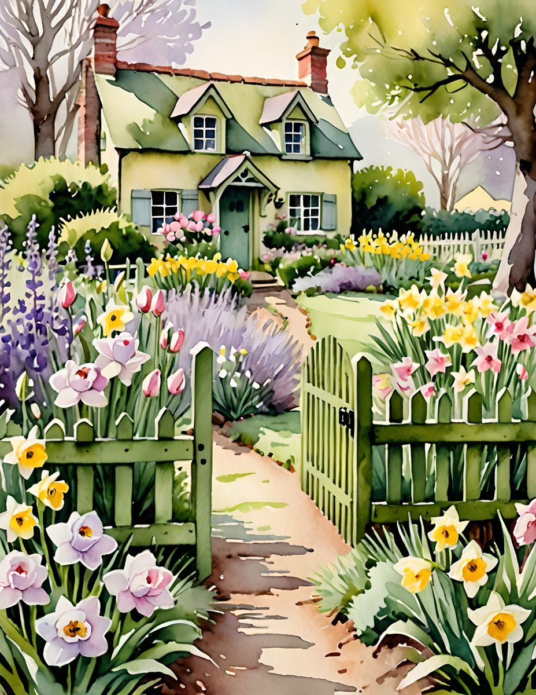
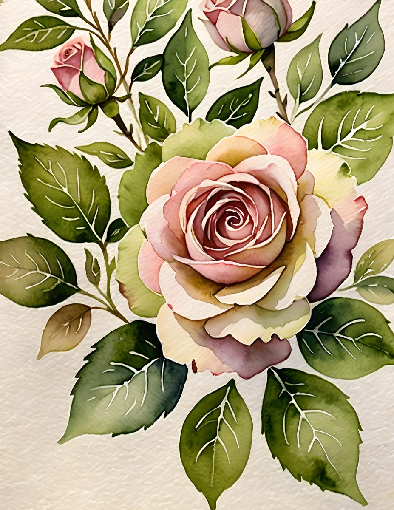
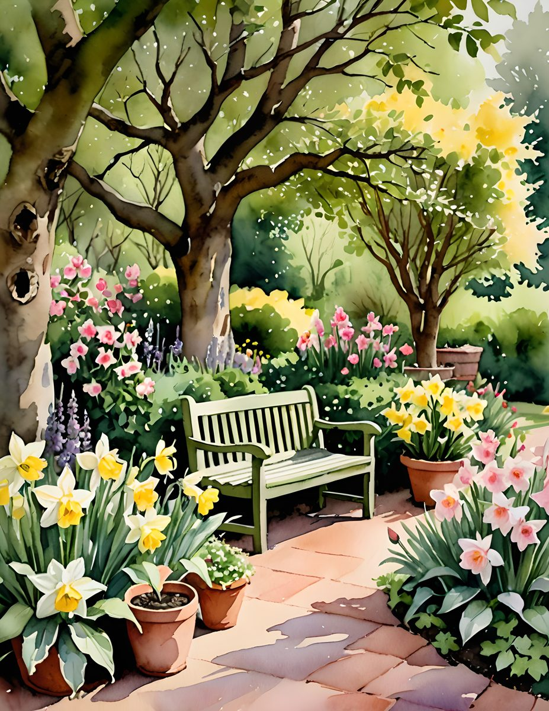

A cottage rose page can go sugary very quickly. The trick is to let the flowers be romantic, then give the rest of the page a little garden structure: green stems, weathered cream, a small path or gate, and one darker accent so the spread has somewhere to rest.

The garden-path palette is the easiest starting point. Pull cream from the paper, sage from the leaves, a quiet pink from the roses, and a deeper green from the shaded trees. Use the darker green only once or twice, like a hinge: a label, a date strip, or the edge of a pocket.

The rose close-up is softer and more intimate. It works best when the page is about one memory rather than a whole day. Keep the layout simple: one large floral page, one torn note, one tiny photo or ticket, then a small line of handwriting near the bottom.

The bench scene is the most story-led palette. It has enough depth for a full spread: a left page for journaling, a right page for collage, and a little garden-walk feeling between them. Save this one when you want the journal to feel like a place you could step into.

Make it feel lived-in
The beautiful part is the repetition. Pick five colors from one page, then repeat them in tiny places: a tab, a thread, a torn edge, a sticker, a date label. The page starts to feel designed because the colors keep answering each other.

Real pages to start from
If you want the mood without rebuilding it from scratch, the matching printable pages give you roses, cottage paths, and soft green garden pieces that already speak the same color language.



For more color inspiration, browse the full Sentimentalica journal archive and save the palette idea you want to try next.